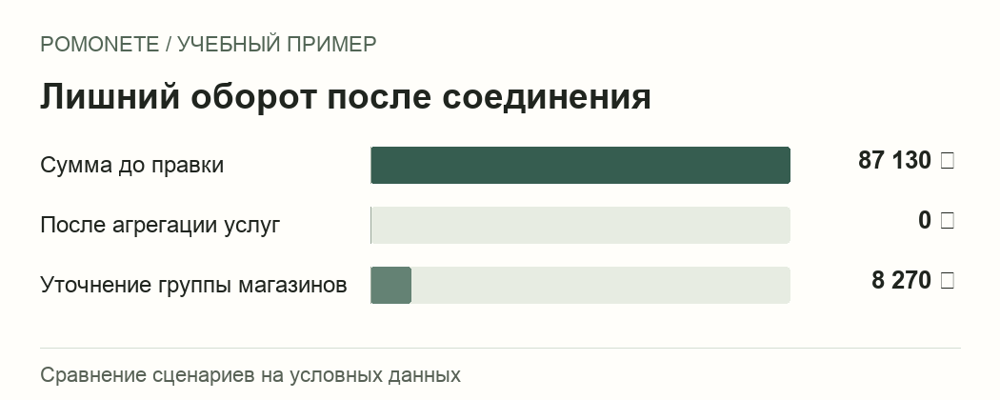

Дубли после соединения заказов и услуг в аналитике Яндекс Маркета
Как селлеру проверить, не выросла ли выручка из-за разного числа товарных и сервисных строк.
Селлер Яндекс Маркета связал таблицу заказов с несколькими услугами по номеру заказа. Итог выручки вырос, хотя продаж больше не стало. Для аналитики важно понять, на каком уровне лежит каждый источник и когда соединение размножает значения.
Как определить ключ таблицы
Отдельно посчитайте число строк на заказ, товарную позицию и услугу. Если ключ встречается несколько раз с обеих сторон, простое соединение даст перекрёстные сочетания. Соберите суммы на совместимом уровне и сохраните детализацию как отдельный просмотр.
Чтобы пересобрать расчёт «Лишний оборот после соединения» для своего магазина, перенесите в него исходные числа. В формуле A обозначает «оборот после соединения строк, ₽», B обозначает «исходный оборот, ₽». Знак показывает направление разницы. Обе величины приводят к одному периоду и одной единице измерения до вычитания. Запишите рядом период и охват каждого среза. Для оценочных строк оставьте пояснения рядом с исходными значениями. При чтении сводки будет видно, какие из них пока подтверждены.
Лишний оборот после соединения = A − B
| Условие | Оборот после соединения строк, ₽ | Исходный оборот, ₽ | Лишний оборот после соединения |
|---|---|---|---|
| Сумма до правки | 475 680 | 388 550 | 87 130 ₽ |
| После агрегации услуг | 388 550 | 388 550 | 0 ₽ |
| Уточнение группы магазинов | 396 820 | 388 550 | 8 270 ₽ |

В сценарии «Сумма до правки» в формулу подставляем оборот после соединения строк, ₽ = 475 680, исходный оборот, ₽ = 388 550. Получается 87 130 ₽. К нескольким товарным строкам в общей таблице привязано больше одной услуги.
В сценарии «После агрегации услуг» в формулу подставляем оборот после соединения строк, ₽ = 388 550, исходный оборот, ₽ = 388 550. Получается 0 ₽. Суммы услуг предварительно собраны на совместимом уровне.
В сценарии «Уточнение группы магазинов» в формулу подставляем оборот после соединения строк, ₽ = 396 820, исходный оборот, ₽ = 388 550. Получается 8 270 ₽. Фильтры двух источников расходятся. Само соединение требуется проверить на одинаковом охвате.
Если «Сумма до правки» взять за исходную точку, «После агрегации услуг» меняет показатель «лишний оборот после соединения» на -87 130 ₽, а «Уточнение группы магазинов» на -78 860 ₽. Между двумя последними строками разница составляет 8 270 ₽ при вычитании второй из третьей. Смотрите, какой именно вход изменился между строками. Если менялись объём и условия одновременно, итог сравнения относится ко всему сочетанию.
В пересчёте на исходное значение разница второй строки составляет -100%. Здесь в знаменателе модуль первого результата, 87 130 ₽. Для показателя в процентах рядом сохраните и абсолютную разницу в процентных пунктах. Для малого исходного значения процентный скачок может оказаться крупным даже при скромном практическом эффекте. В рабочем отчёте оставьте оба исходных значения, чтобы при расширении выборки можно было пересчитать изменение.
Почему расходы нельзя без проверки приписать каждому SKU
Некоторые расходы привязаны ко всему отправлению. Для распределения сначала сохраните исходник с одной суммой, затем добавьте прозрачное правило. Итог товаров должен давать прежнюю сумму. Остаток без известной связки держите в контрольном отчёте.
Для исходной выборки пригодятся исходная выгрузка, журнал загрузок и контрольные суммы. Зафиксируйте строки и границы периода, по которым собирался показатель «лишний оборот после соединения». Копию выгрузки держите рядом с рабочим расчётом. По ней коллега сможет проверить, что строку отнесли к нужному сценарию, а единица измерения сохранилась при переносе.
Перед обновлением отчёта сохраните источник, параметры запроса, время выгрузки и число строк на каждом шаге. Сначала проверяют ключ и единицу наблюдения, потом сравнивают итоговые суммы. Одинаковые суммы могут относиться к самостоятельным операциям. Чтобы найти дубль, проверьте ключ и документы. Подключив справочник, проверьте, какие записи не сопоставились, и разнесите их по причинам до пересчёта показателя.
Что сильнее всего меняет результат
Возьмём сценарий «После агрегации услуг» с результатом 0 ₽. В нём последовательно изменим «оборот после соединения строк, ₽», «исходный оборот, ₽». Для каждого входа шаг близок к 10% его исходной величины, целые значения округлены. После каждого опыта возвращаем остальные числа к исходным. Так можно выяснить, какой вход уточнять первым, если перед решением мало времени.
- «Оборот после соединения строк, ₽» меняется с 388 550 на 427 405. При прежних остальных входах получается 38 855 ₽, сдвиг составляет 38 855 ₽.
- «Исходный оборот, ₽» меняется с 388 550 на 427 405. При прежних остальных входах получается -38 855 ₽, сдвиг составляет -38 855 ₽.
При выбранных шагах параметр «оборот после соединения строк, ₽» дал самый крупный сдвиг величиной 38 855 ₽. Если в магазине эта величина меняется в узком диапазоне, подставьте обе его границы. Для связанных условий добавьте отдельную строку с одновременным изменением входов и поясните их связь в примечании.
Проверьте возвраты, если по одной позиции пришло несколько операций в разные дни. Добавить их к первой продаже можно после сведения на нужном уровне. Противоположные знаки следует сохранить до контрольной суммы. Для наглядной проверки возьмите заказ с двумя товарными позициями и тремя начислениями на один пакет. Если после присоединения получилось шесть строк, проверьте, сколько раз в них встречается одна и та же продажа.
Как поставить автоматическую проверку
В тестовой группе сверьте оборот, число исходных строк и число рабочих ключей. Добавьте условие, что сумма услуг после распределения совпадает с источником. После каждого импорта покажите, какие записи остались без связи и какой оборот в них содержится.
При повторном импорте берите ту же исходную выборку и фиксируйте, какие записи действительно изменились. В стабильном отчёте сумма после второго прогона того же набора остаётся равной первой. Отложенные корректировки могут изменить поздний снимок, поэтому журнал версий пригодится для ответа на вопрос, когда возникло отличие. Дайте пользователю отчёта ссылку на строку, которую можно проверить вручную.
Оставьте в рабочей таблице причину выбора. Когда селлеры Яндекс Маркета возвращаются к расчёту «лишний оборот после соединения», им пригодятся полученное значение, ответственный и дата пересмотра. Если в решении использовался сценарий «После агрегации услуг», перенесите вместе с ним допущения. При обновлении источников сначала проверьте одну исходную строку и только потом пересчитывайте сводку.